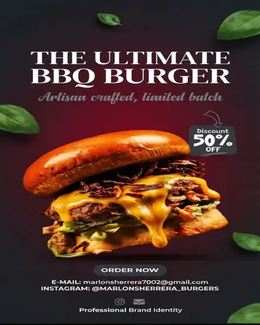
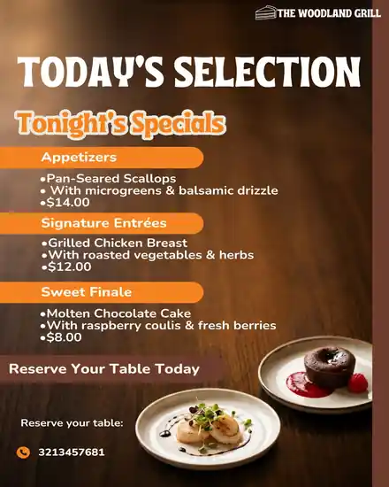
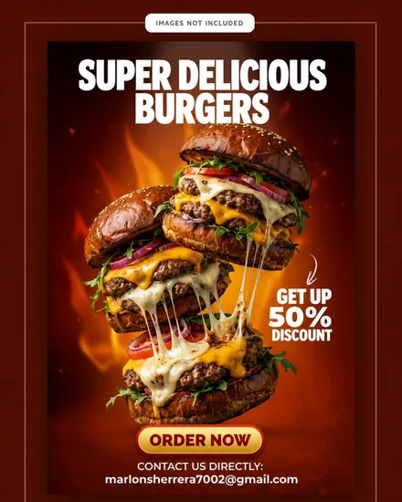

Publicidad para redes sociales
Publicación diseñada para destacar en el feed de Instagram y generar más interacción real.
Ideas y ejemplos reales
Ideas y ejemplos reales de publicidad para restaurantes, cafeterías, pizzerías, panaderías y negocios de comida rápida en Bogotá. Si estás buscando referencias para tu próxima campaña o quieres que alguien la diseñe por ti, aquí encuentras ambas cosas.
Opciones
No toda la publicidad para un restaurante cumple el mismo objetivo. Estas son las piezas más efectivas que veo funcionar en restaurantes y negocios de comida en Bogotá:
Publicaciones para Instagram y Facebook pensadas para el feed: fotos de platos, promociones del día y contenido que invita a comentar o compartir. Es la publicidad para restaurantes más usada porque llega directo a clientes que ya siguen tu marca.
Ideales para aperturas, promociones puntuales o repartir cerca de tu local. Una pieza de publicidad impresa bien diseñada comunica tu oferta en segundos.
Para punto de venta o campañas digitales de mayor formato. Sirven para reforzar una promoción activa o anunciar un producto nuevo en tu restaurante.
Aunque no siempre se piensa como "publicidad", un menú digital claro es una de las piezas que más influye en la decisión de compra del cliente en el momento exacto en que va a pedir.
Ejemplos reales
Piezas reales que he diseñado para restaurantes y negocios de comida. Puedes ver más ejemplos en mi Instagram y en mi perfil de Fiverr.

Publicación diseñada para destacar en el feed de Instagram y generar más interacción real.

Un menú claro que funciona como publicidad silenciosa: ayuda a vender más en cada mesa.

Pieza de publicidad impresa lista para repartir o publicar en fechas de alta demanda.
Casos específicos
La publicidad para comida rápida suele tener un objetivo distinto al de un restaurante formal: el cliente decide más rápido, así que las piezas destacan precio, combos y promociones de forma más directa. En cafeterías y panaderías, en cambio, funciona mejor una publicidad más cálida, enfocada en el ambiente y los productos de temporada.
Sea cual sea tu tipo de negocio gastronómico, adapto el estilo de la publicidad a lo que realmente necesita tu marca, no una plantilla genérica igual para todos. Ver todos los servicios de diseño disponibles →
Precios
Los planes de publicidad para restaurantes comienzan desde $80.000 COP para una pieza puntual, y van hasta paquetes completos desde $350.000 COP con menú, flyers, banners y publicaciones. El precio final depende de la cantidad de piezas y la complejidad de tu proyecto. Ver el detalle completo de cada plan →
Preguntas frecuentes
Depende del objetivo: para atraer seguidores funcionan bien las publicaciones para Instagram y Facebook, para promociones puntuales los flyers y banners, y para la decisión de compra en el punto de venta, un menú digital claro.
El objetivo cambia un poco: en comida rápida suele importar más la velocidad de decisión, así que las piezas destacan precio, combos y promociones de forma más directa que en un restaurante formal.
Sí, puedes ver ejemplos reales entregados a restaurantes y negocios de comida en mi Instagram y en mi perfil de Fiverr.
Los planes comienzan desde $80.000 COP para una pieza puntual, hasta paquetes completos desde $350.000 COP con menú, flyers y publicaciones. El precio depende de la cantidad de piezas que necesites.
Escríbeme por WhatsApp contándome qué tipo de negocio tienes y qué necesitas, y te propongo el plan más adecuado.
Hablemos de tu proyecto
Escríbeme por WhatsApp y cuéntame qué tipo de negocio tienes. Te responderé con una propuesta clara y a tiempo.
Escribir por WhatsApp